四十校友会同心聚力，共绘新春文化画卷
——首届墨尔本中国高校校友春节庆祝活动圆满落幕
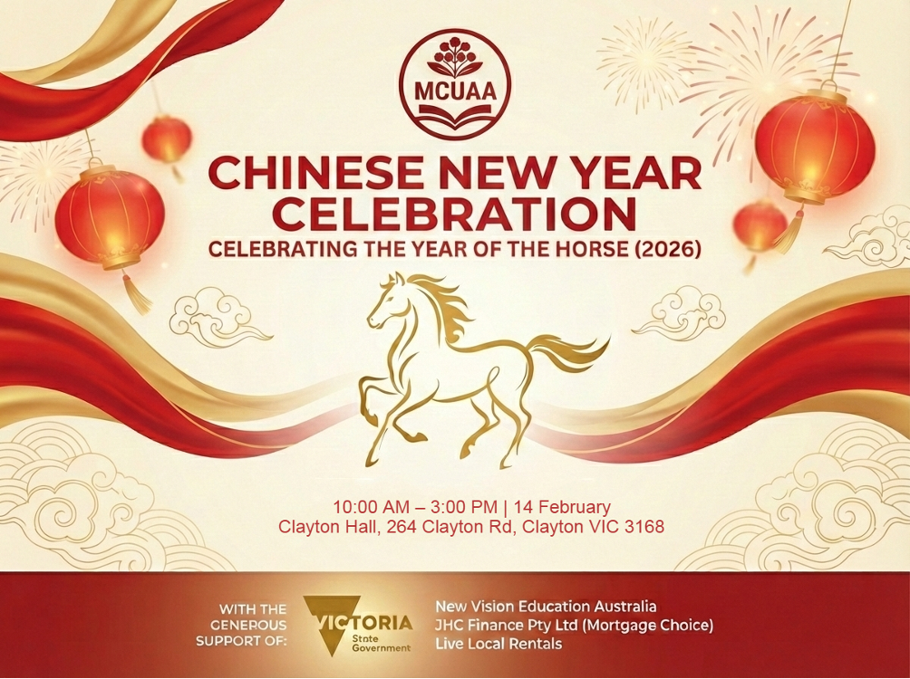
2026年2月14日上午，墨尔本Clayton Hall内张灯结彩、人声鼎沸。由墨尔本中国高校校友会联盟（MCUAA）主办的“2026年墨尔本中国高校校友春节庆祝活动”隆重举行。来自大墨尔本地区四十多所中国高校的250余名校友齐聚一堂，共同庆祝农历新年。
群策群力：一场有温度的“家宴”
这是MCUAA自2025年五月份正式启动以来又一次举办大型跨校联合活动，不仅是一场节日的盛宴，更是一次凝聚海外华人校友力量、传承中华文化的重要实践。将四十多所高校、背景各异的校友——从工程师、医生、教师到创业者、艺术家、学生——组织在同一场活动中，绝非易事。MCUAA核心团队为此付出了极大的努力。自2025年12月起，联盟便启动了筹备工作，历时近二个月，召开多次线上协调会，经过充分讨论，反复推敲方案细节，并将任务细化到人、责任落实到岗。最终，一支由近50名热心校友组成的志愿团队承担起场地布置、签到引导、餐饮准备、摄影摄像、秩序维护等全部现场任务。大家虽然都是义务付出，却积极主动，一丝不苟。充分体现了中国高校毕业生的严谨务实的作风，和对生活的热忱。正是这种严谨与热忱，使这场规模盛大的新春庆典得以顺利呈现，也充分彰显了MCUAA作为联谊平台的卓越凝聚力。
14日上午9:45，志愿者们早早就抵达了现场。在MCUAA理事会的统筹指挥下，各项工作有条不紊地展开。有人悬挂横幅、组装大型背景板；有人顶着盛夏烈日摆放停车指示牌；有人来回搬运、精心布置桌椅；有人细致安排接待处与奖票售卖处；有人调试音响设备；还有人切西瓜、洗水果和面拌馅……厨房里很快飘出家乡的味道，整个会场也迅速被忙碌而温馨的氛围填满。
10点整，校友们陆续抵达。不出意料的是，许多刚到场的校友并未只是落座等待，而是主动加入准备工作——端盘子、摆餐具、协助签到。尽管彼此素未谋面，但相似的文化背景、求学经历与生活语境，让陌生感迅速消融，配合默契如故交重逢。随着人数渐多，会场愈发热闹。四十余校、二百五十余人围坐于不同桌案，畅谈国内校园往事，分享在澳生活点滴，其乐融融，宛如一场跨越时空的“校友家宴”。
本次活动特别设置了两项沉浸式文化体验——包饺子与中华书法，让来宾在参与中感受传统之美。现场志愿者与校友围坐一桌，和面、擀皮、包馅，其乐融融，浓浓年味在欢声笑语中升腾。另一侧，南京大学校友书法家尤本林老师挥毫泼墨，讲解笔法与章法，来宾亲手执笔书写“福”字，在墨香氤氲中体会中华文化的深厚底蕴。
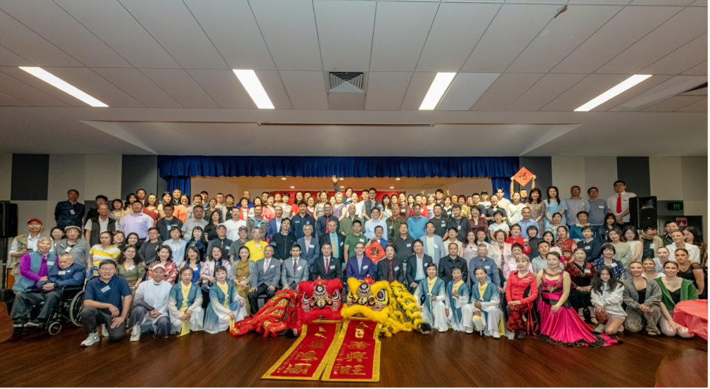
瑞狮贺岁：点燃全场的中国符号
不知不觉，时间就到了11点，联欢会在锣鼓喧天、醒狮贺岁中拉开帷幕。伴随着铿锵有力的锣鼓声，一对色彩绚丽的传统舞狮踏着节拍跃入大厅。醒狮在人群中腾挪翻滚，时而眨眼点头，憨态可掬；时而威风凛凛，拱手作揖。它们一路行至舞台中央，又纵身而下，向各桌校友送上新春祝福。嘉宾与观众纷纷上前合影，赞叹连连。这一极具仪式感的暖场表演，不仅瞬间点燃全场热情，也成为整场活动最鲜明的中国文化符号。
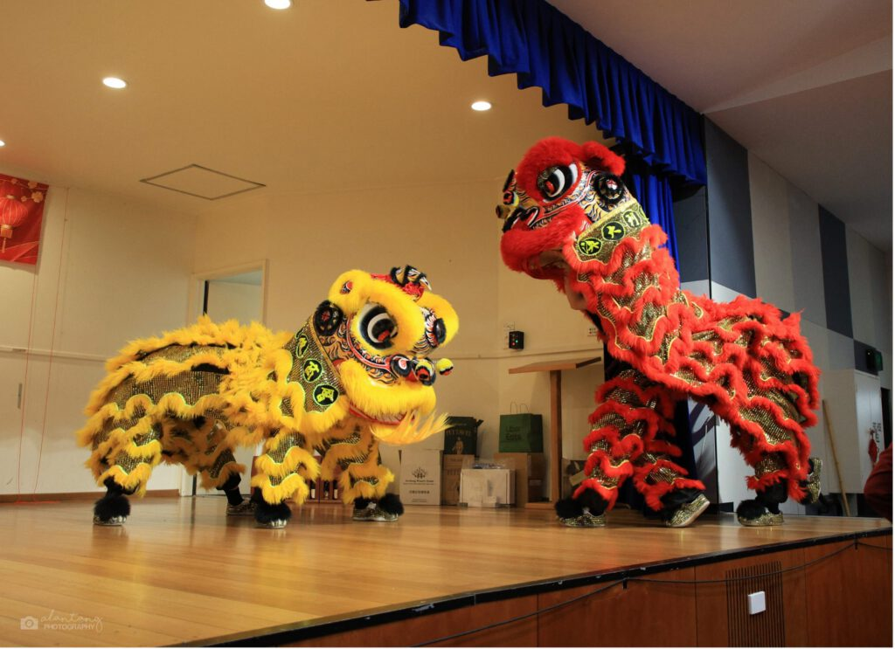
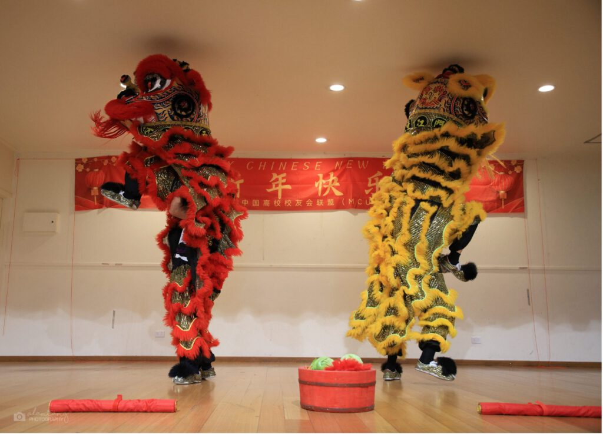
嘉宾致辞，情暖新春
锣鼓声的余韵尚未散去，温暖的新春祝福已在会场内回荡。
本次活动荣幸邀请到澳大利亚联邦助理部长、联邦议员Julian Hill，中国驻墨尔本副总领事裴贵春先生，Monash市市长Stuart James，以及澳洲华人专业人士俱乐部（CPCA）主席陈骐先生莅临现场，并为在场嘉宾和校友送上诚挚的新春祝福。Chisholm 选区联邦议员 Carina Garland 博士、Glen Waverley 选区州议员John Mullahy专门发来贺信，Ashwood 选区州议员 Matt Fregon 则通过视频送上祝贺。
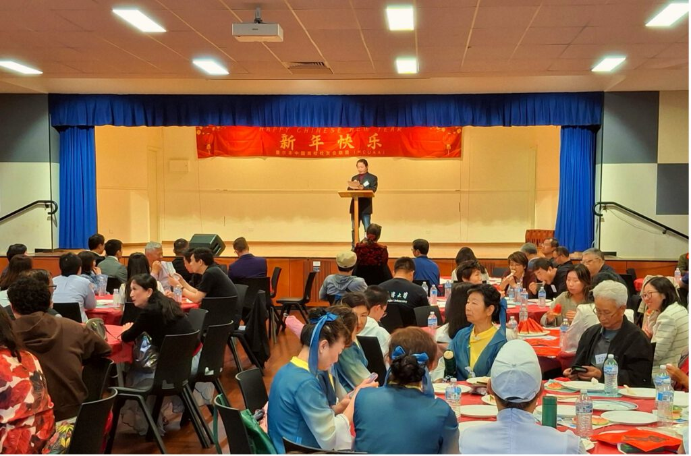
墨尔本中国高校校友会联盟主席范志良博士首先致欢迎辞。他表示，高校联盟致力于凝聚在墨中国高校校友力量，搭建交流联谊、合作共赢的平台，促进专业发展、服务多元文化社区建设、推动澳中民间交流。联盟汇聚各行业优秀人才，正在成为多元社会中一支充满活力与责任感的重要力量。他祝愿高校联盟在新的一年里龙马精神、蒸蒸日上。
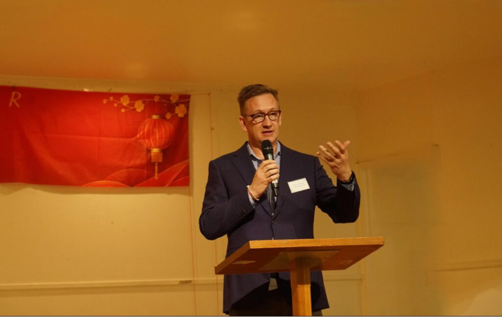
在联邦政府负责多元文化社区事务与国际教育政策的助理部长Julian Hill在致辞中，高度评价中国高校校友会联盟在推动多元文化社区发展和促进澳中文化交流方面所作出的积极贡献。他强调，多元文化是澳大利亚社会的重要基石，不同族群的文化交融为国家注入活力与创新动力。倡导种族平等、反对种族歧视，不仅体现社会公义，更是维护社会和谐与共同繁荣的关键所在。
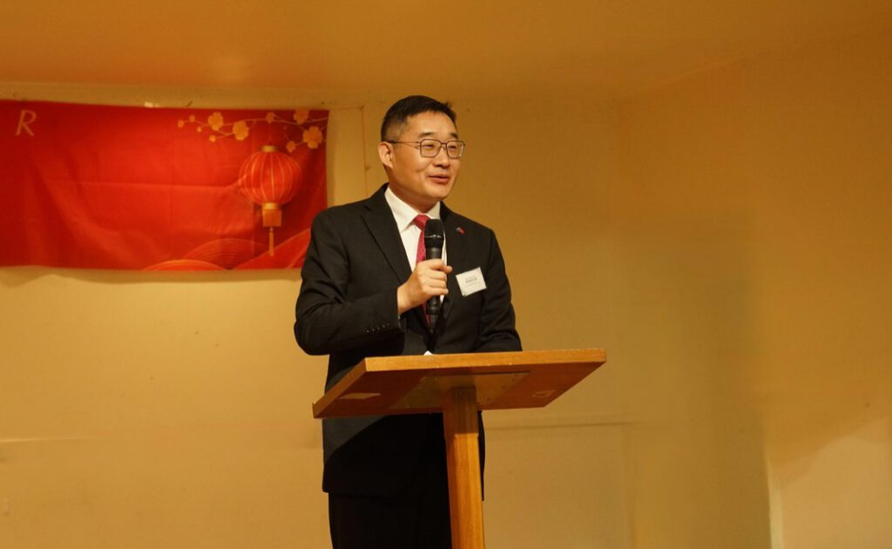
中国驻墨尔本总领馆副总领事裴贵春致辞时，代表总领馆向各位校友致以诚挚节日祝福。他表示，过去一年，中澳交流持续回暖，各领域交流逐步恢复，双边贸易额再创新高，人文交流日益密切。高校联盟汇聚多方力量，促进跨校交流，为传播中华文化，促进中澳民心相通作出了积极贡献。
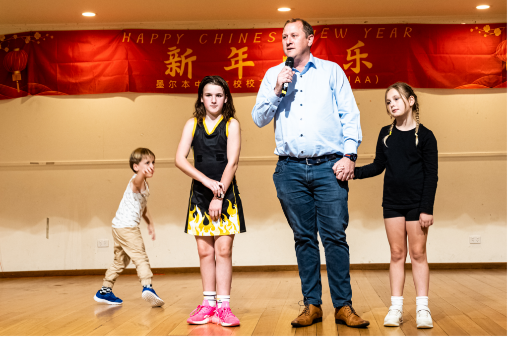
Monash市市长Stuart James高度肯定高校联盟在Monash社区建设中的积极贡献，并表示本次春节庆祝活动不仅弘扬了中华优秀传统文化，也进一步促进了跨文化理解与多元文化社会建设。
嘉宾的真诚祝福与殷切期望，赢得现场阵阵热烈掌声。随后，全体嘉宾与校友齐聚舞台前合影留念，共同定格这一温暖而珍贵的时刻。
文艺会演：传统与现代交织，东方与西方共鸣
中午12点30分，热气腾腾的饺子出锅，午餐宣布开始。家乡的味道，让校友的食指大动。一边吃，一边继续交流，对接下来的节目，期待更浓。
而联欢会的组织者，也不负大伙所望，在下午1点整，将联欢会的重头戏，文艺会演正式拉开了帷幕。
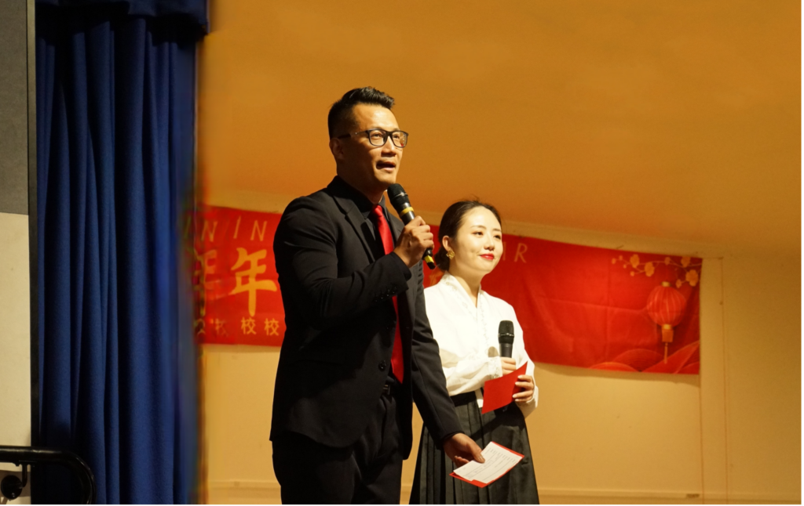
“无论身在何方，逢年过节，总有一种味道牵动我们的心，那就是家的味道、家的感觉、家的归属。” 伴着柔美的音乐和抒情的解说词，主持人墨尔本东南大学校友会郑楠教授和西北工业大学墨尔本校友会陈若曦女士，联袂登场，刹那间，就让所有人感觉跨越万水千山，回到了久别的故园。
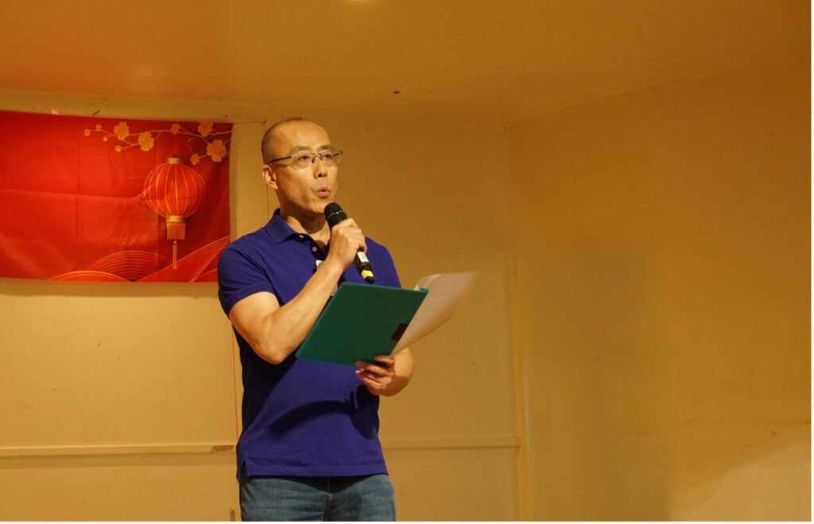
电子科技大学澳洲校友会侯学杰校友配乐诗朗诵《新年》，更是以朱自清笔下的温情文字，唤起游子们对“家”的思念。虽然远在万里之外，但是，家人的平安，日子的红红火火，却是所有游子共同的心愿。
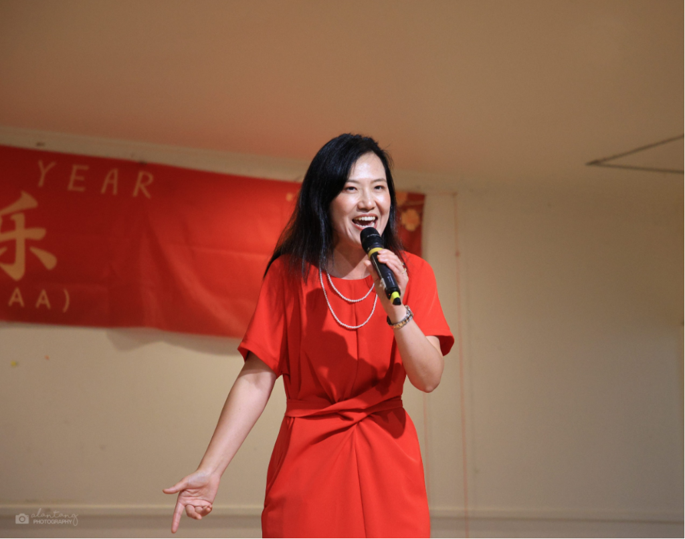
墨尔本东南大学校友会的才女钱黎明，以一首经典的女声独唱《好日子》，代表所有人，表达了对亲朋好友的祝福。清亮甜美的嗓音配合喜庆旋律，唱出了“欢天喜地迎新春”的共同心声。台下校友们，不自觉，就跟着歌声的节奏打起了拍子。每个人脸上都笑容洋溢。节日气氛，也在礼堂内不断升温。
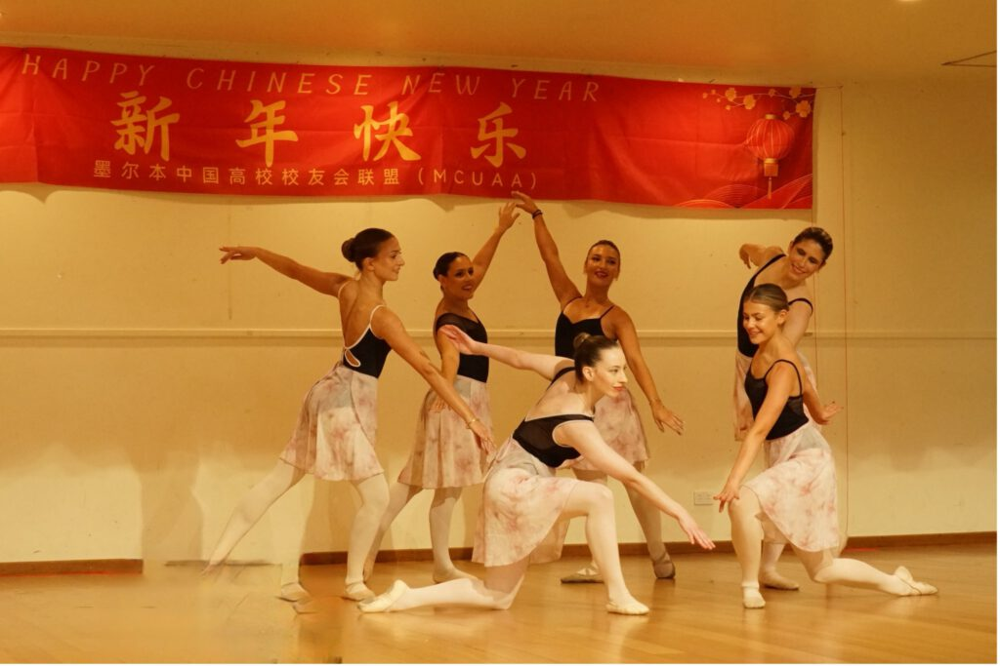
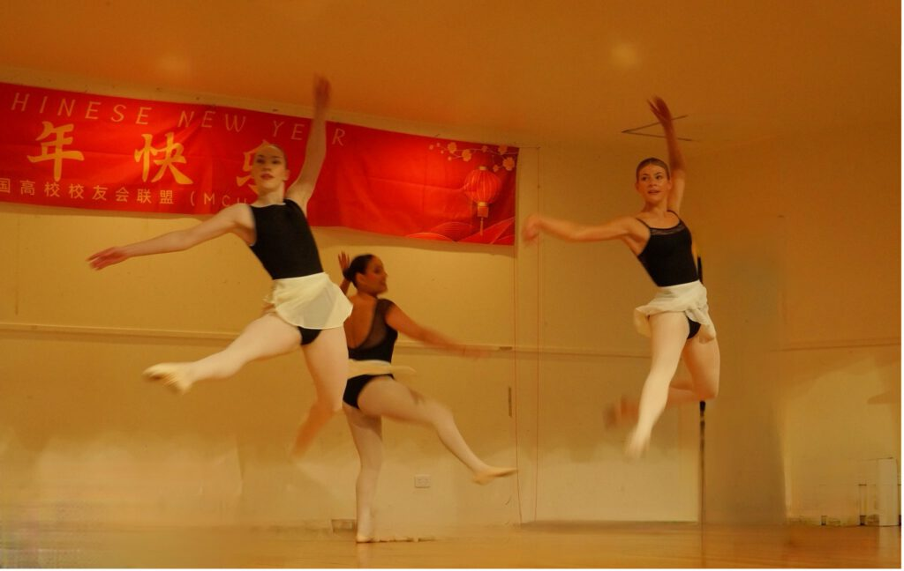
春节不仅仅是中国的节日，随着中外交流的不断扩大，影响力也逐渐拓展到整个世界。本次联欢活动，也得到了当地社区的关注和支持。来自 Chadstone School of Ballet 老师和学生们，特地送上了芭蕾舞《那不勒斯》与现代舞《哭泣》，与校友们共同庆祝中国新年。她们的优美舞姿，给嘉宾和校友们留下了深刻的印象。
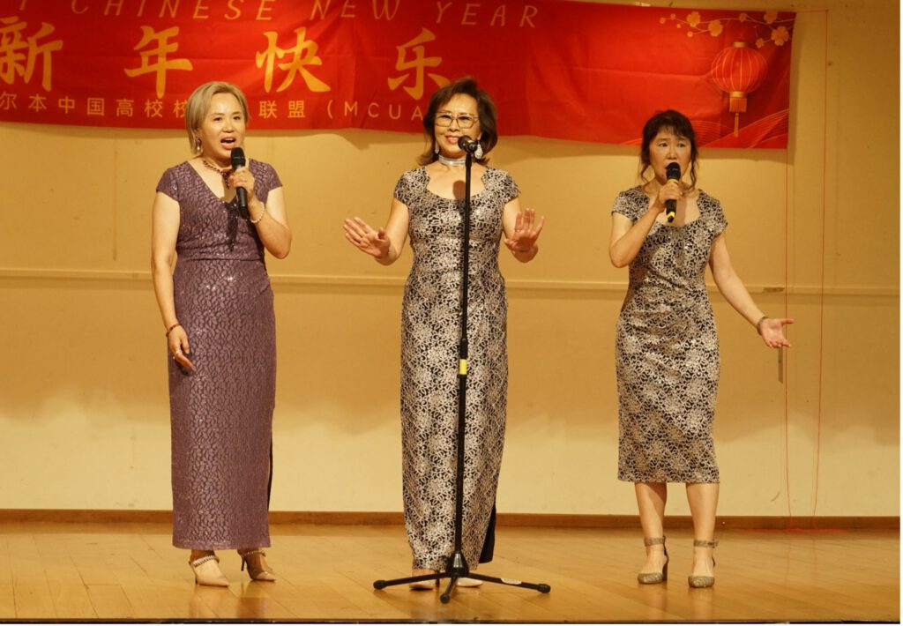
北京大学墨尔本校友会吴亚楠、李莉校友和辽宁大学校友张翠女声三重唱《我和我的祖国》声线和谐，情感真挚。唱到高潮处，全场观众自发齐声合唱，歌声激荡人心。这一刻，所有人都衷心地祝愿祖国繁荣昌盛，爱国之情在每一位校友心中激荡。
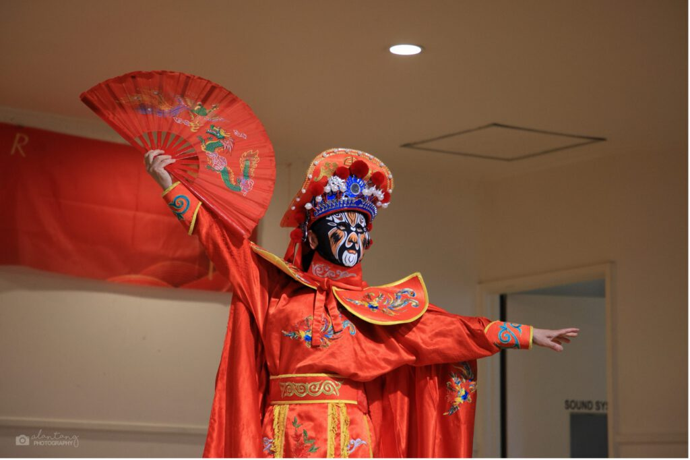
本次活动特地邀请了川剧变脸表演者阿凡老师。作为国家级非物质文化遗产，节目一亮相就引得掌声雷动。表演者身法敏捷，在电光火石间变换脸谱，红、黄、蓝、白、黑，令人目不暇接。这一充满神秘东方色彩的艺术形式，不仅唤起同胞的文化认同，也让当地嘉宾连连称奇。
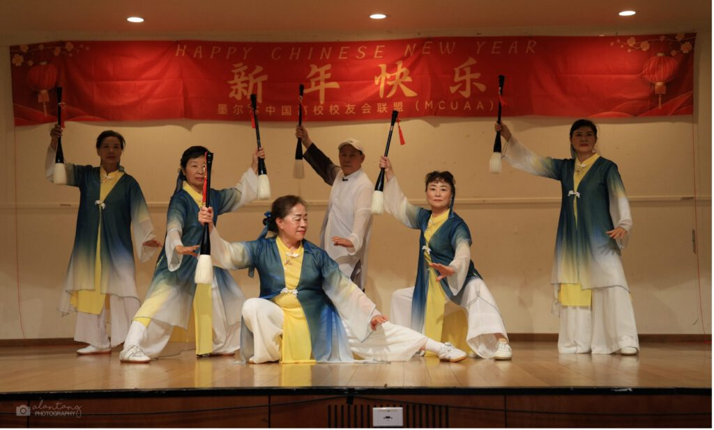
中山大学墨尔本校友会的陈式太极功夫毛笔表演将武术与书法巧妙融合。表演者以笔为剑，行云流水；笔锋回转间，既有太极的圆融沉稳，又有书法的苍劲有力。这种动静结合的表演形式，尽显中华哲学的博大精深之美。
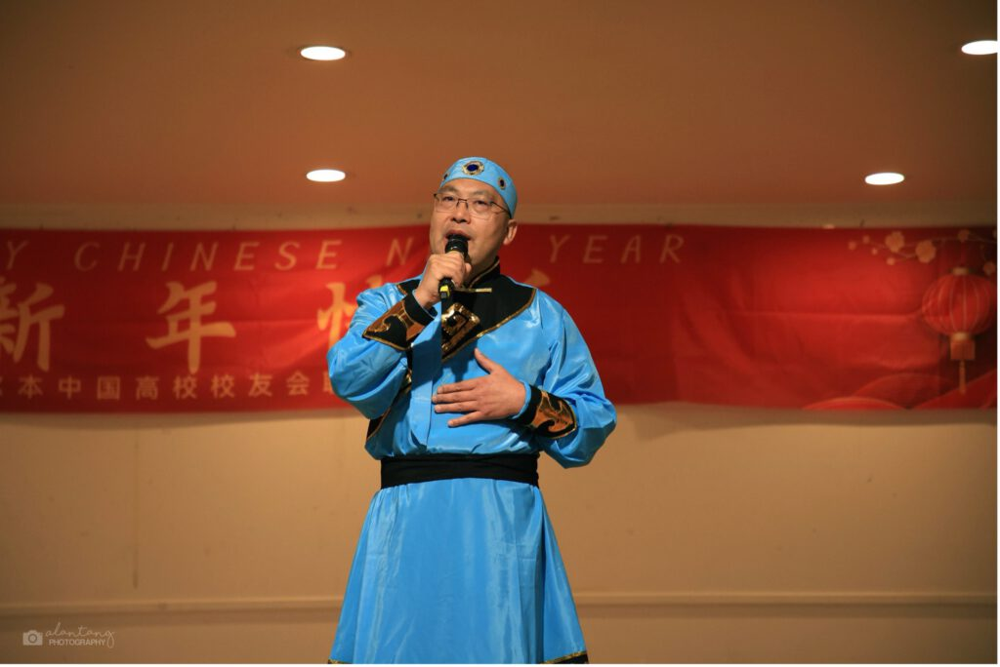
西北工业大学墨尔本校友会马忠权校友男声独唱《今夜草原有雨》以沉稳深情的嗓音，勾勒出草原夜色的辽阔与思念的柔软。歌声层层递进，在宁静与辽远之间传递出游子对故土的牵挂，令人回味悠长。
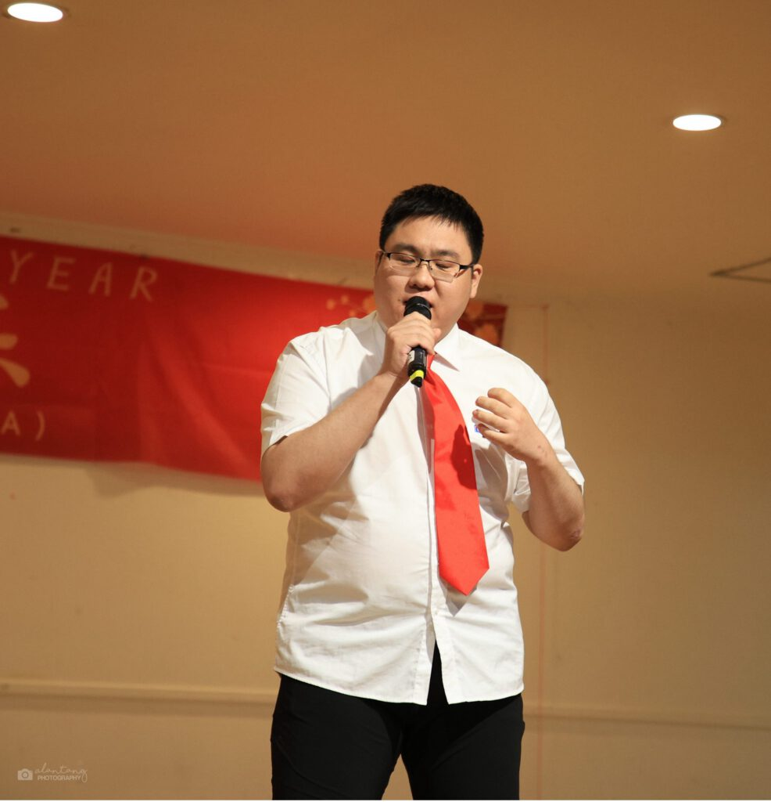
大连理工大学墨尔本校友会赵锐韬男声独唱《中华好儿孙》节奏铿锵有力，旋律高昂激越。演唱者气势饱满，将家国情怀与奋发精神展现得淋漓尽致。
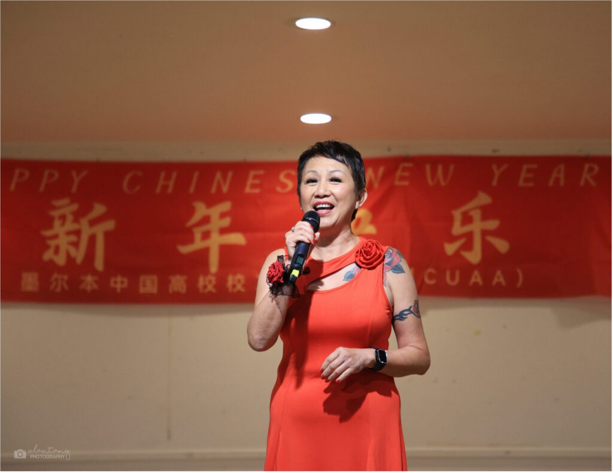
华东师范大学墨尔本校友会乐一凡校友深情献唱英文金曲《You Needed Me》。她的嗓音醇厚富有磁性，情感表达细腻真挚，将这首关于感恩与爱的经典之作演绎得丝丝入扣。歌声如涓涓细流，温柔浸润着在场每一位听众的心田。情绪层层递进，感染力十足，令人不由自主沉浸其中，现场掌声此起彼伏。
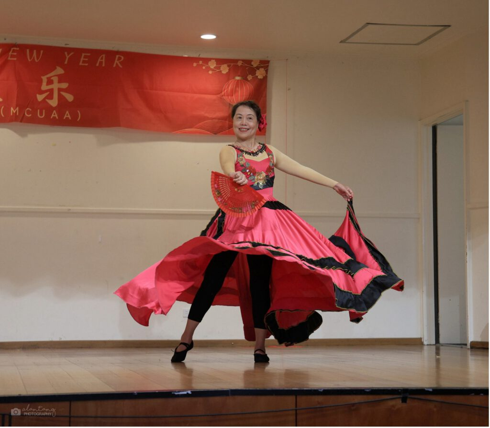
天津大学墨尔本校友会易路平校友身着红黑相间的华丽舞裙，带来一曲热情奔放的西班牙独舞《美丽的西班牙女郎》 。她舞步繁复而精准，裙摆飞扬间尽显异域风情。每一个旋转、每一次顿足都充满了力量与美感，展现了文化交融的独特魅力，引得台下叫好声不断。
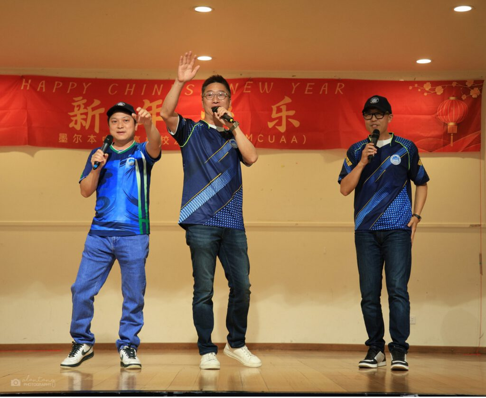
华南理工大学澳洲校友会张成武、蓝宾涛、杨杰祥三位校友联袂献唱经典粤语老歌《朋友》。三人配合默契，嗓音沉稳而真挚，在岁月沉淀中流露出温暖与力量。熟悉的旋律瞬间唤起青春记忆，道尽友情的珍贵与陪伴，引发台下阵阵共鸣。不少观众轻声跟唱，现场氛围温馨而动人。
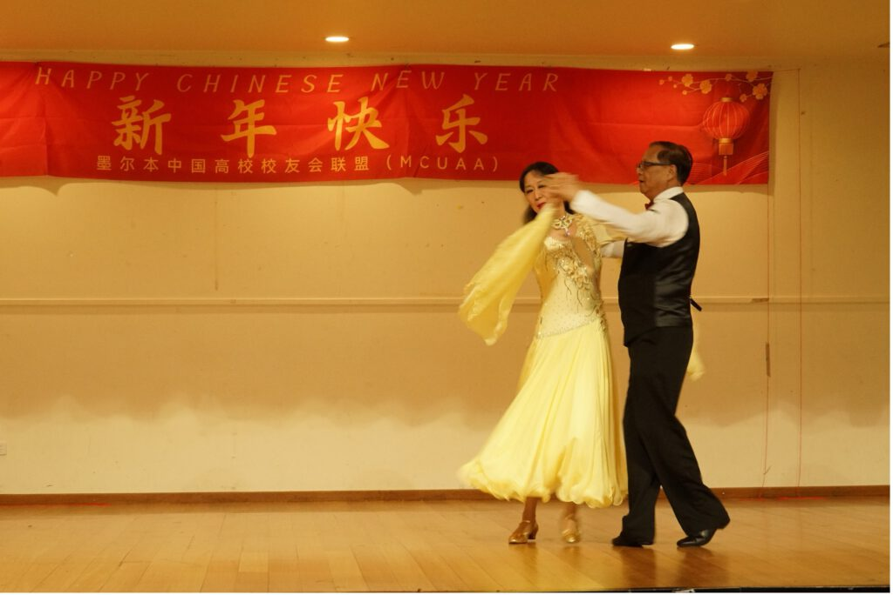
东华大学墨尔本校友会周仲武、福建师范大学墨尔本校友会刘建英默契演绎华尔兹《Nocturne》。舞步轻盈流畅，配合自然从容，在旋转与停顿之间展现出优雅与张力。整支舞蹈如夜曲般柔美含蓄，既有古典气质，又充满浪漫情怀。
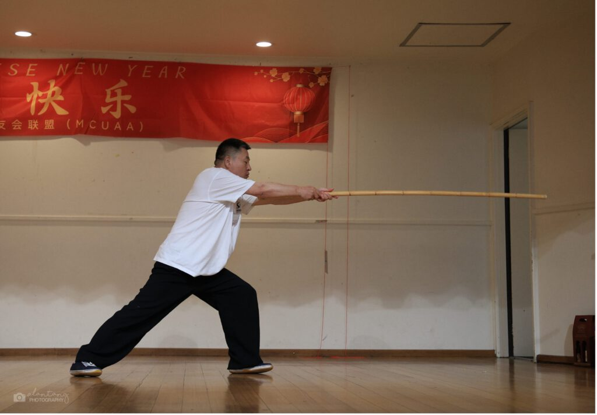
西安电子科技大学澳新校友会孙吉武校友表演了一套国际武联初级棍套路，动作标准规范，棍法密集如雨。劈、扫、撩、戳，招招带风，展现了中华武术的精气神。
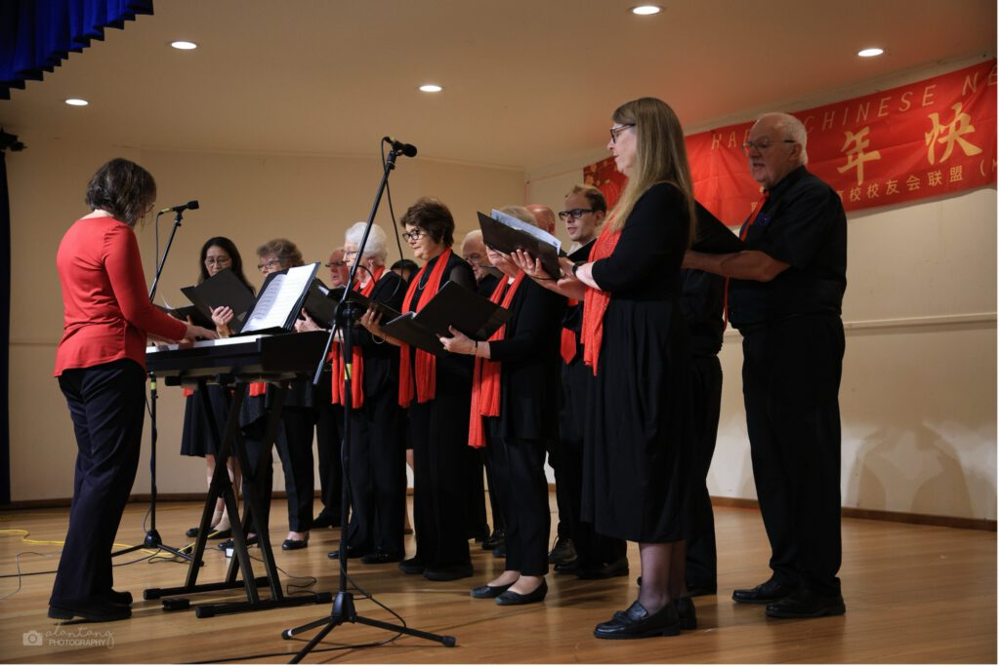
Free Spirit Choir多族裔合唱团倾情献唱《The Lion Sleeps Tonight》《Bring Me a Little Water》《Rhythm of Life》三首英文歌曲。不同肤色、不同背景的歌者以和谐之声交织共鸣，跨越语言与文化的边界，让现场观众真切感受到“音乐无国界”的包容与力量。
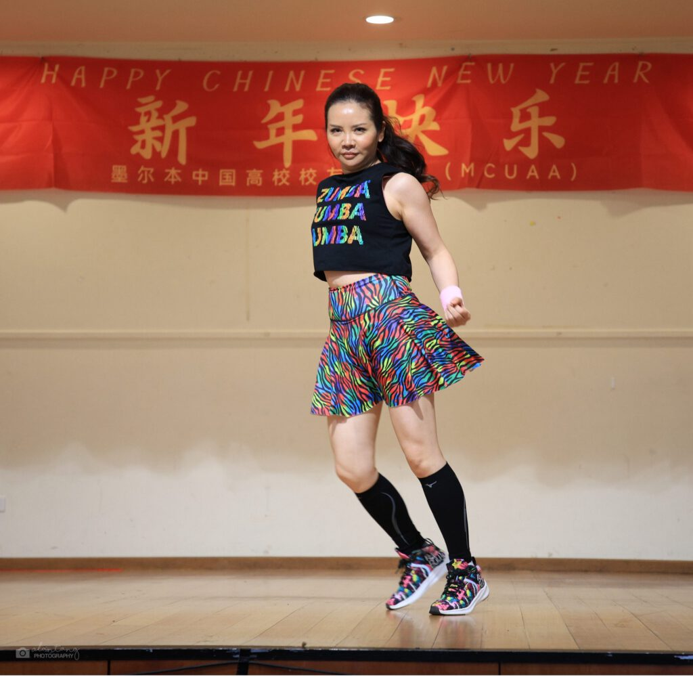
欢乐的时光总是转瞬即逝。转眼间已近下午三点，墨尔本浙江大学校友会欧寒艳校友领舞动感十足的Zumba互动环节，为活动画上热烈而欢快的句点。伴随《小苹果》的欢快旋律，全体校友尽情舞动，笑声、掌声与欢呼声汇聚成一片欢乐的海洋。
爱心汇聚，情暖全场
维多利亚州政府通过“多元文化节庆与活动基金”对活动给予了大力支持；天津大学墨尔本校友会校友刘莘通过澳洲新视野教育、厦门大学墨尔本校友会校友李明庭通过利路客短租服务公司，以及中南大学澳洲校友会校友黄绢通过JHC Finance Pty Ltd（Mortgage Choice）提供现金赞助。除此之外，大连理工大学墨尔本校友会侯伟、华侨大学墨尔本校友会万迪玫、南京大学墨尔本校友会吕莉、电子科技大学澳洲校友会周静、西北工业大学墨尔本校友会张伟、青岛大学墨尔本校友会陈广保、墨尔本东南大学校友会范志良等校友，捐赠了红酒、护肤品、香槟、暖手宝、科普扑克等实用礼品，总价值超过3500澳元。
著名书法家尤本林老师现场挥毫泼墨，并宣布进行书法作品慈善拍卖，所得款项将用于支持MCUAA未来发展。拍卖现场气氛热烈，经过多轮角逐，大连理工大学墨尔本校友会谢军校友最终以750澳元成功竞得尤老师墨宝，赢得现场阵阵掌声。
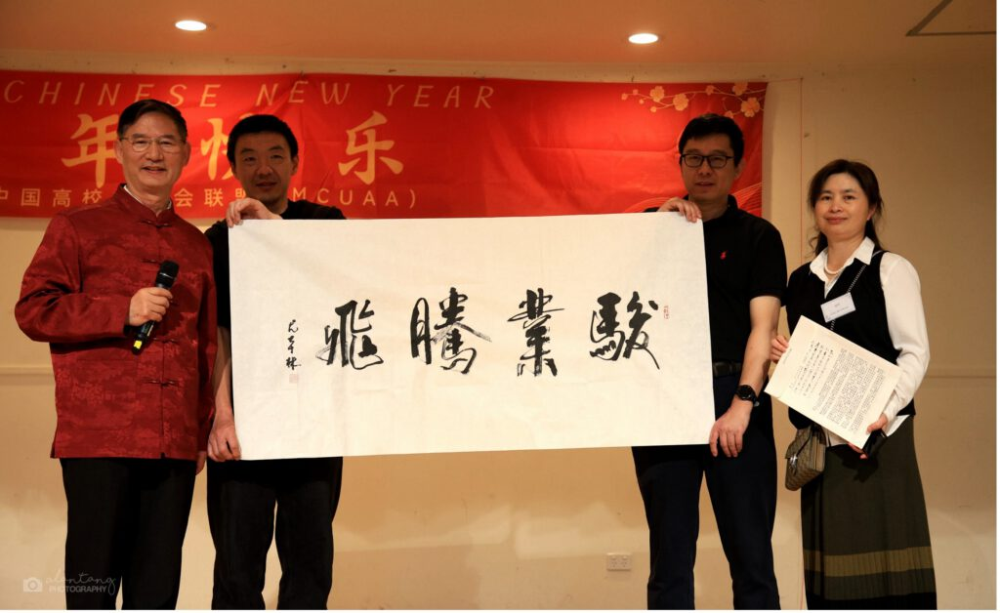
在歌声与舞蹈的间隙，墨尔本高校联盟精心安排了抽奖环节，每一次幸运号码的揭晓都伴随着热烈掌声与欢笑，温情弥漫整个会场。

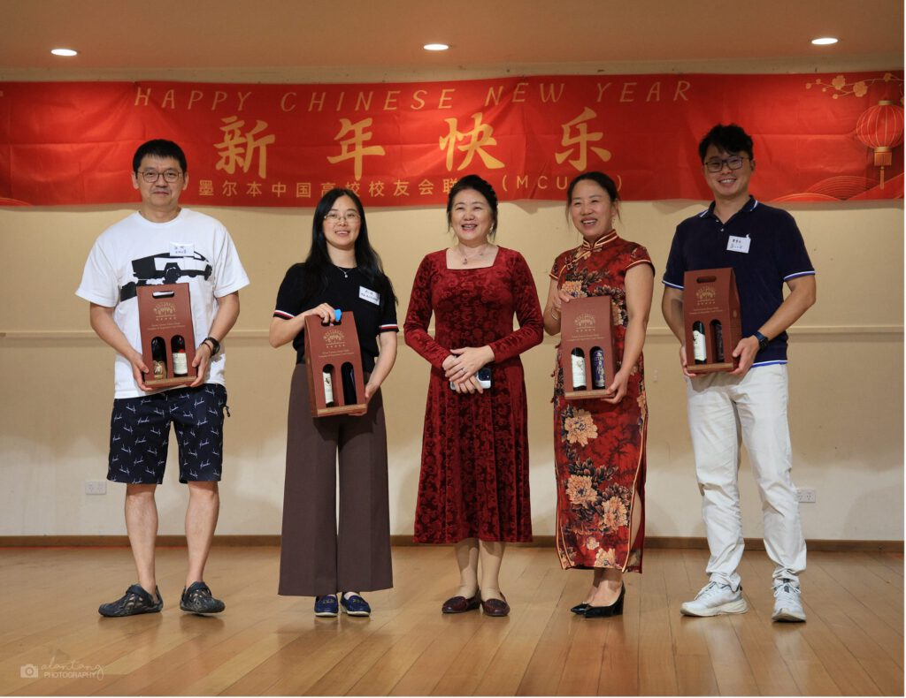
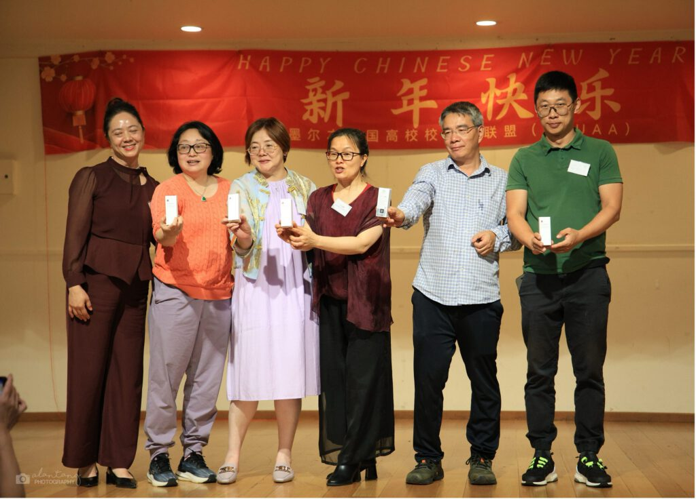

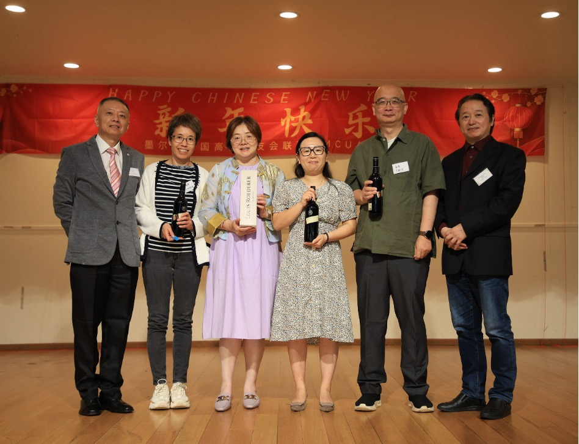
MCUAA向所有赞助单位和校友致以最诚挚的感谢。正是有了他们的热心支持与慷慨捐助，大家才能齐聚一堂，共同度过这个奖品丰盛、好运连连的新春佳节。
这场春节联欢会不仅是一场成功的文化盛典，更标志着墨尔本中国高校校友组织从“各自为营”迈向“协同共进”的重要里程碑。未来，MCUAA将持续搭建交流平台，推动中华文化传承、职业互助与社区融合，让中华之根在南半球生生不息，也让世界感受到华人社群的温暖、活力与力量。
文字：蒙虎、范志良
摄影：汤艺峰、唐建华、刘书义
编辑：何云爽